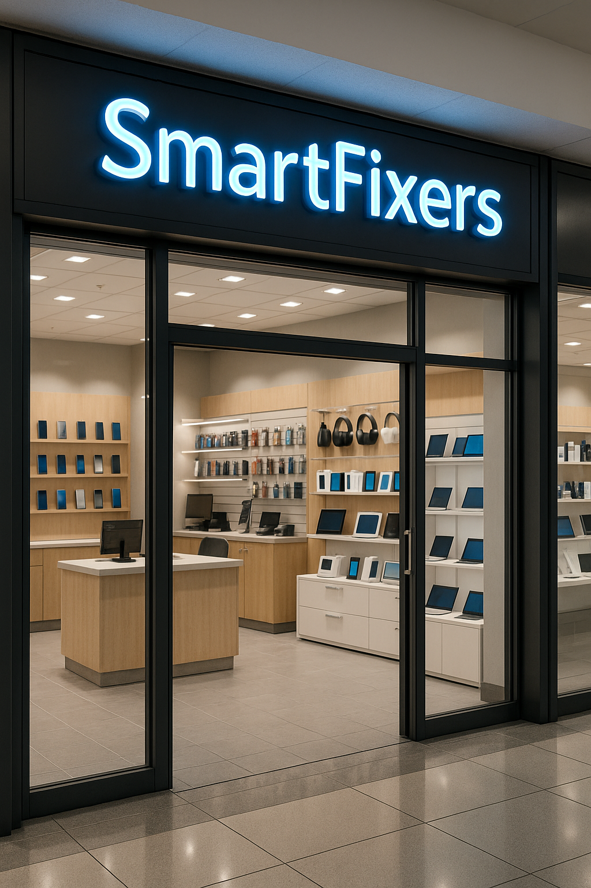

Bienvenido a SmartFixers
Se trata de un establecimiento comercial dedicado a la venta de artículos electrónicos como computadoras, laptops, componentes internos (procesadores, memorias, discos duros, tarjetas gráficas, etc.), periféricos (teclados, mouse, impresoras, monitores), accesorios tecnológicos y productos variados. Además, nuestro local ofrece servicios técnicos especializados en la reparación, mantenimiento preventivo y correctivo de computadoras de escritorio y portátiles. El objetivo principal es brindar soluciones integrales a usuarios particulares y empresas que buscan mantener sus equipos electrónicos en óptimas condiciones de funcionamiento. Adentrate y busca lo que necesites.